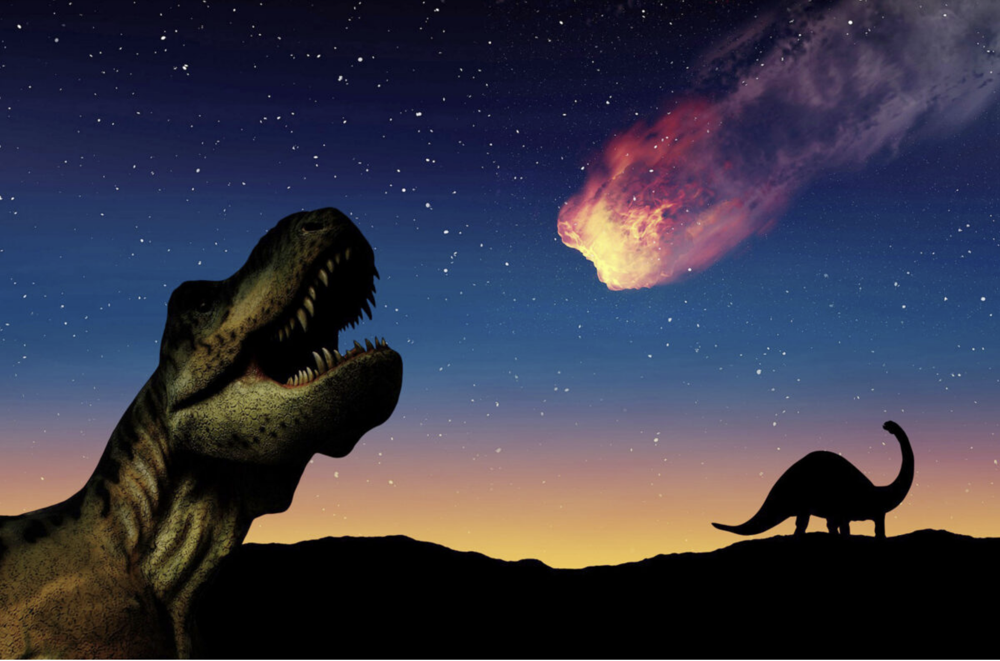
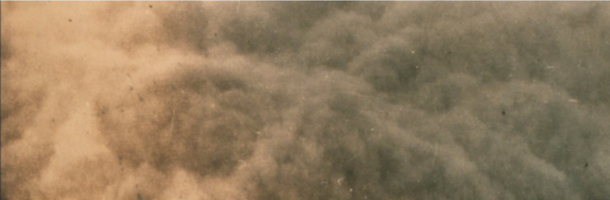

Hello and welcome to this page, now I have some “stuff” to talk about. This “stuff” is about how the dinosaurs died and it's not just one killer but two. What are these theories? You may ask well, it's very simple. The earth was growing colder for years but the dinosaurs (like all things) weren't realizing it because no one could feel the tiny change every week because it was so gradual but then something happened and it was so tremendous it wiped out the dinosaurs… What is this thing I speak about? It's simply the asteroid that hit the earth. Why? Well, it's because most fossils contain a mineral found in asteroids so when an asteroid hit the earth (and the continents were one big one) the dust measured the entirety of pangea (the big continent). Again we start the sentence with a question, “if before you wrote about the asteroid theory but you kind of dismissed it then why are you saying the asteroid killed the dinosaurs and dust doesn't sound like a second killer.” Well that was a long double question but the answer is the dust weakened the dinosaurs and made the disease fighting immune system weak letting the first case of the common cold come in and take its deadly effect.

This is the first killer A.K.A. Chicxulub impactor.

So this is more or less the dust cloud extinguishing all dinomanity.